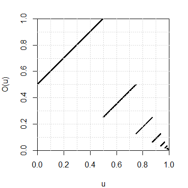
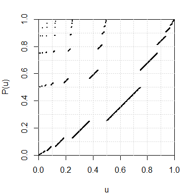

Dyadic expansion with R
We provide a function that computes the dyadic representation of a real number in the interval \([0,1]\). Then we give an implementation of two transformations of the set \({\{0,1\}}^\mathbb{N}\) which are well-known in ergodic theory: the dyadic odometer and the Pascal transformation. For each of these transformations, we plot the graph of the conjugate transformation of \([0,1]\) obtained by the dyadic representation.
Dyadic expansion
Every real number \(u \in [0,1]\) has a dyadic expansion (or binary expansion): \[ u = \frac{\epsilon_1}{2} + \frac{\epsilon_2}{2^2} + \frac{\epsilon_3}{2^3} + \ldots \] where \(\epsilon_i=0\) or \(1\). We say that the sequence \((\epsilon_1, \epsilon_2, \ldots)\) is the dyadic representation of \(u\).
The num2dyadic function below returns the dyadic representation of \(u \in [0,1]\).
num2dyadic <- function(u, nmax=1024L){
out <- integer(nmax)
i <- j <- 0L
while(u>0 && i<nmax){
j <- 1L + max(0L,floor(-log2(u*(1+.Machine$double.eps^.5))))
if(i+j <= nmax){
i <- i + j
out[i] <- 1L
u <- 2L^j*u - 1L
}else{
i <- nmax
}
}
return(out[1:i])
}The dyadic2num function below does the reverse action:
Let us check that the dyadic representation of \(0.75 = \frac{1}{2}+\frac{1}{4}\) is \((1,1)\):
The real number \(u=0.2\) has the infinite periodic dyadic representation \((0, 0, 1, 1, 0, 0, 1, 1, \ldots)\). The num2dyadic function applied to \(0.2\) returns only the first \(54\) digits of its dyadic representation:
( d <- num2dyadic(0.2) )
## [1] 0 0 1 1 0 0 1 1 0 0 1 1 0 0 1 1 0 0 1 1 0 0 1 1 0 0 1 1 0 0 1 1 0 0 1
## [36] 1 0 0 1 1 0 0 1 1 0 0 1 1 0 0 1 1 0 1
length(d)
## [1] 54But it makes no difference for R:
The dyadic odometer
The dyadic odometer is the transformation \(O\) of the set \({\{0,1\}}^{\mathbb{N}}\) defined by \(O(d) = d + (1, 0, 0, \ldots)\), where “\(+\)” is the addition \(\bmod\, 2\) with carry to the right.
The odometer function below is an implementation of the dyadic odometer and its inverse (option image="backward").
odometer <- function(d, image=c("forward", "backward")){
image <- match.arg(image)
if(image=="forward"){
if(all(d==1L)){
d <- c(rep(0L, length(d)), 1L)
}else{
k <- which.min(d)
d[1:k] <- 1L-d[1:k]
}
}
if(image=="backward"){
if(all(d==0L)){
d <- c(rep(1L, length(d)), 0L)
}else{
k <- which.max(d)
d[1:k] <- 1L-d[1:k]
}
}
return(d)
}Using the dyadic representation, the odometer also defines a map from the interval \([0,1]\) to itself. We plot its graph below:
par(mar=c(4,4,2,2))
u <- seq(0, 0.995, by=0.001)
Ou <- sapply(u, function(u) dyadic2num(odometer(num2dyadic(u))))
plot(u, Ou, xlab="u", ylab="O(u)",
xlim=c(0,1), ylim=c(0,1),
pch=19, cex=.25,
pty="s", xaxs="i", yaxs="i")
grid(nx=10)
The Pascal transformation
The Pascal transformation \(P\) is defined for every \(d \in {\{0,1\}}^{\mathbb{N}}\) except when \(d=000\ldots\) or when \(d\) has the form \(d=0^i111\ldots\) (\(i\geq 0\)). Such a \(d\) has the form \(d= 0^m1^k10x\) where \(m,k \geq 0\) and \(x \in {\{0,1\}}^{\mathbb{N}}\), and then the image of \(d\) by the Pascal transformation is defined by \[ P(0^m1^k10x) = 1^k0^m01x. \] The case when \(d=0^i111\ldots\) does not occur for us since we deal with finite sequences only. One naturally extends the Pascal transformation to include the case \(d=000\ldots\) by setting \(P(000\ldots) = 000\ldots\).
pascal <- function(d){
if(all(d==0L)) return(0L)
i <- which.max(d)
m1 <- i-1L
d0 <- c(d, 0L)
k1 <- which.min(d0[-(1:i)])-1L
begin <- c(rep(1L, k1), rep(0L, m1+1L), 1L)
if(length(d)==m1+k1+1L) d <- begin else d[1L:(m1+k1+2L)] <- begin
return(d)
}By the dyadic representation, the Pascal transformation also defines a map from the interval \([0,1)\) to itself, whose graph is plotted below:
par(mar=c(4,4,2,2))
u <- seq(0, 1-1/2^10, by=1/2^10)
Pu <- sapply(u, function(u) dyadic2num(pascal(num2dyadic(u))))
plot(u, Pu, xlab="u", ylab="P(u)",
xlim=c(0,1), ylim=c(0,1),
pch=19, cex=.25,
pty="s", xaxs="i", yaxs="i")
grid(nx=10)